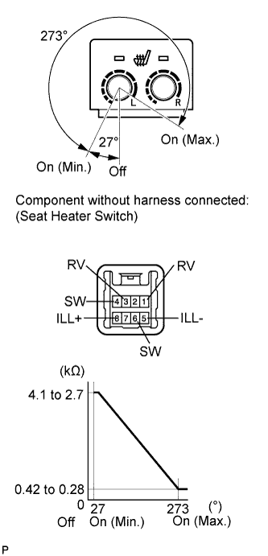

SEAT HEATER SWITCH (w/ Seat Heater System) > INSPECTION |
| 1. INSPECT SEAT HEATER SWITCH |
 |
Measure the resistance according to the value(s) in the table below.
| Tester Connection | Switch Condition | Specified Condition |
| 1 (RV) - 6 (SW) 3 (RV) - 4 (SW) | Switch off | 2.7 to 4.1 kΩ |
| Switch on (Min) | ||
| Switch on (Max) | 0.28 to 0.42 kΩ |
Apply battery voltage to the switch connector, and check that the seat heater switch illuminates.
| Measurement Condition | Specified Condition |
| Battery positive (+) → 8 (ILL+) Battery negative (-) → 5 (ILL-) | Illuminates |